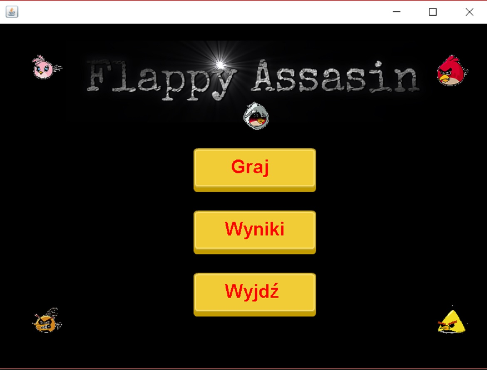
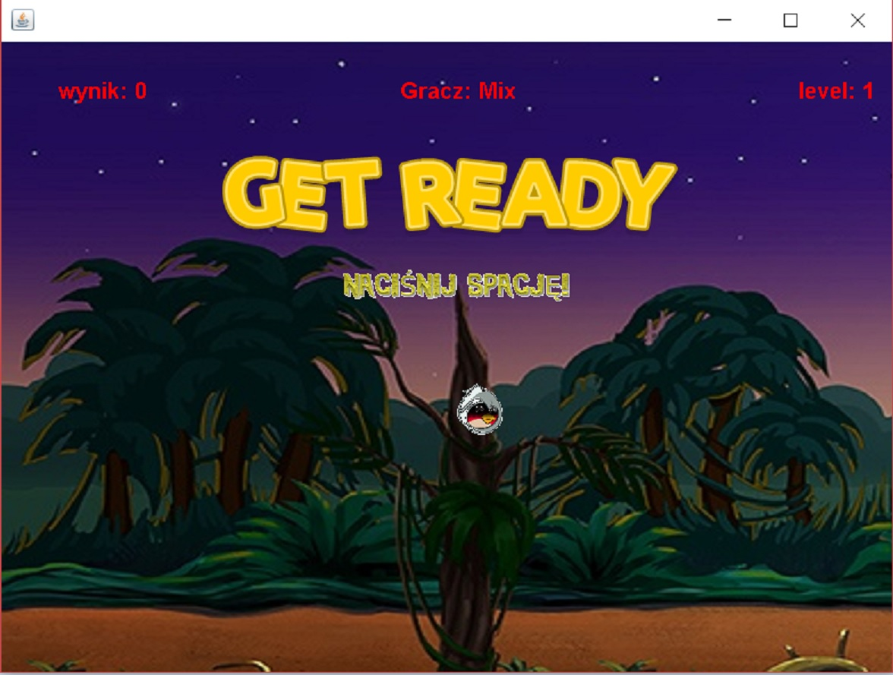
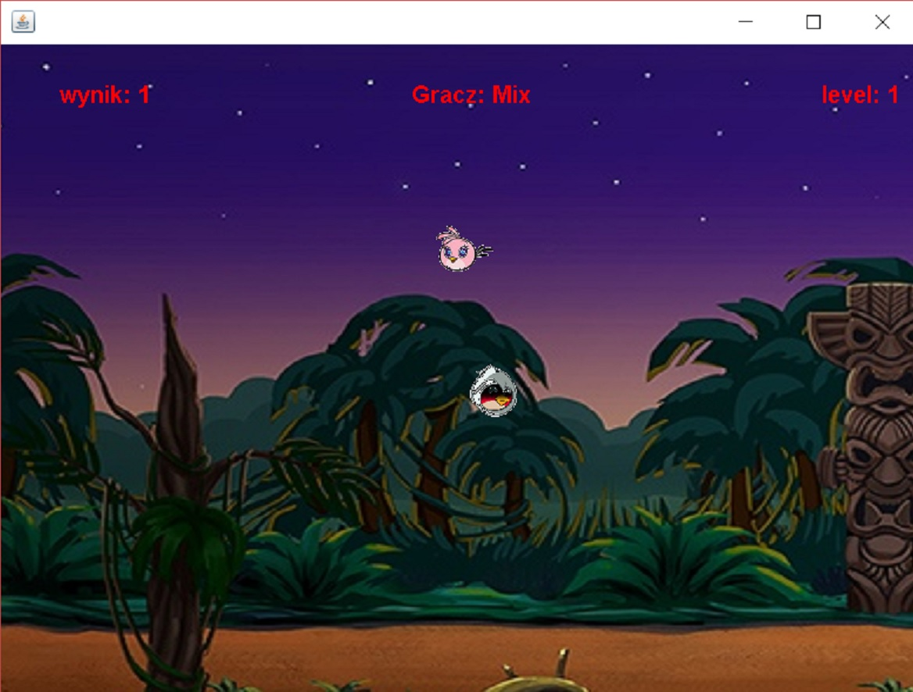

And that's how the Java developer was born.
This is my first meaningful Java project, after which I have started my professional journey into the world of programming.
The application is a game with an idea based on the popular Flappy Bird game. The goal of the game is to jump with the Assassin (using spacebar key), avoiding enemy birds, and not getting out of the screen.
The game has multiple levels, with different levels of difficulty. Every level differs in the number of enemy birds showing up at the screen at the same time.
If you want to try yourself download or clone the git repository. Move to
dist directory and simply start FlappyAssassin.jar file. In
order to run a program you must have Java installed on your machine.
I am aware that the application design, and implementation certainly have many flows, as it has been created many years ago during my first steps in the broad world of programming.